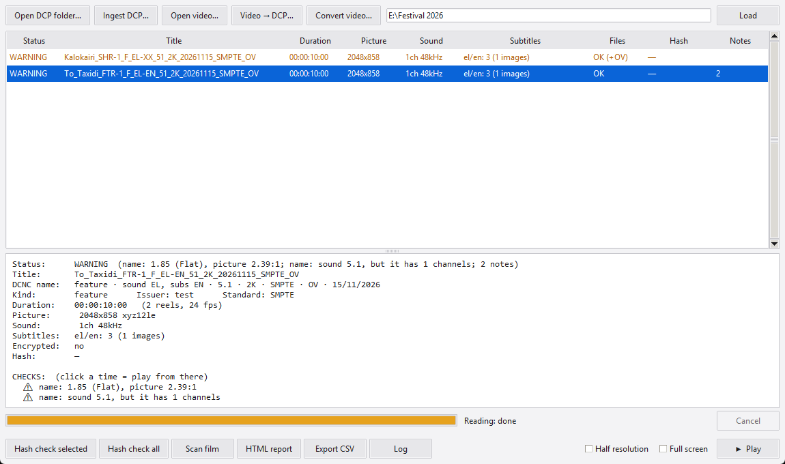
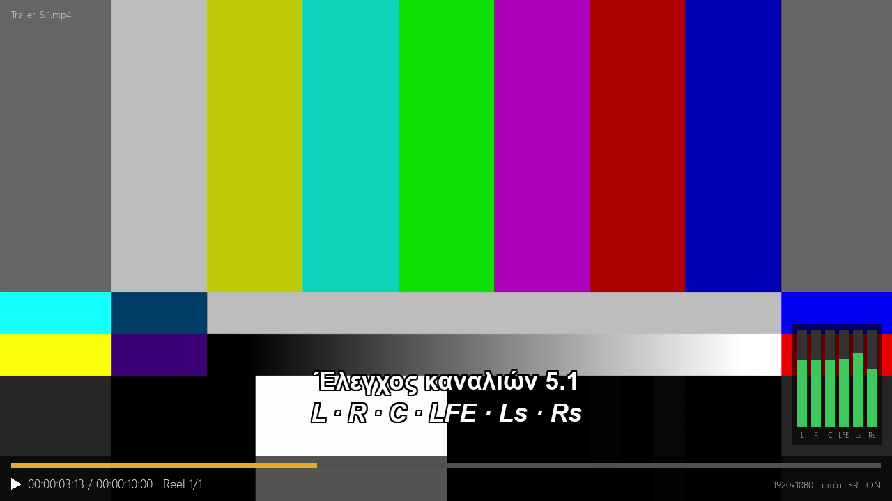
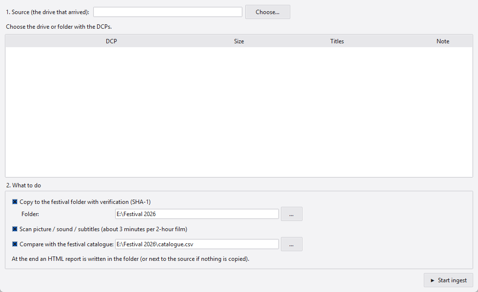
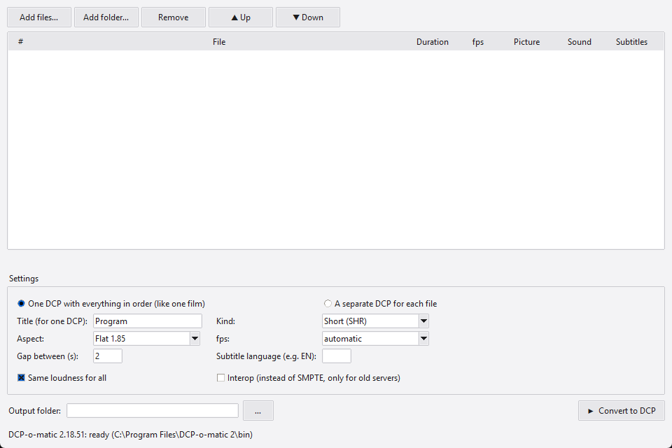
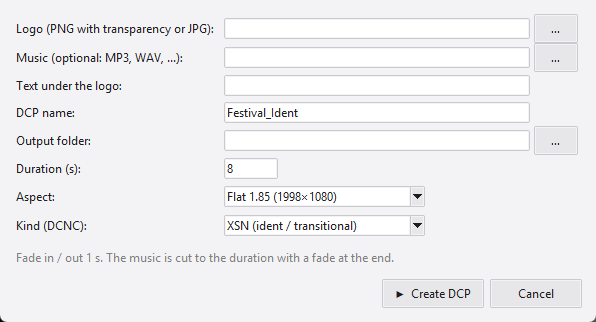
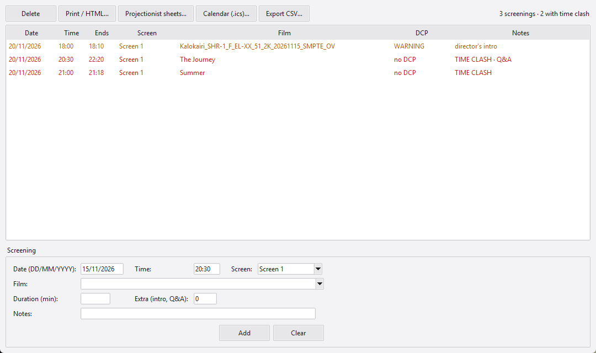
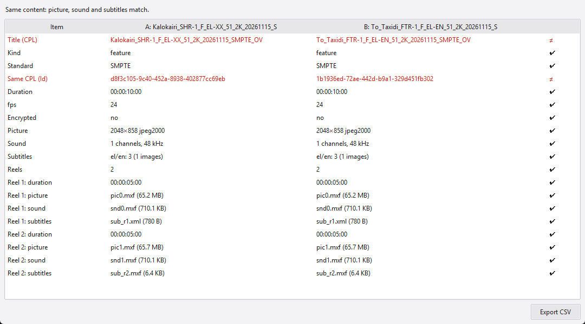
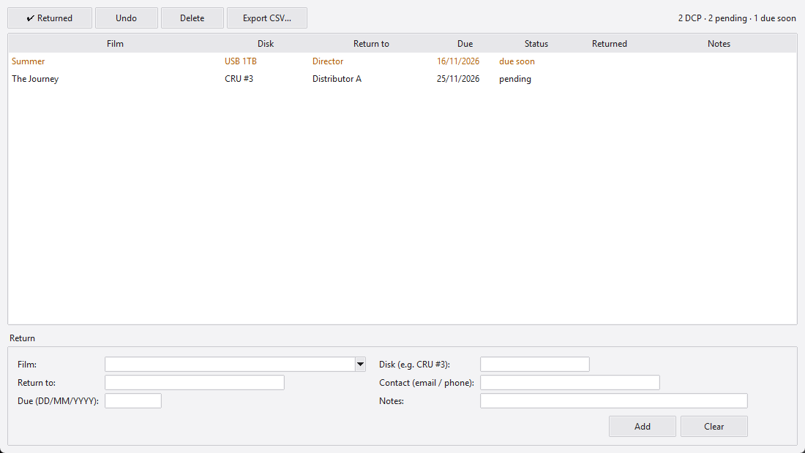
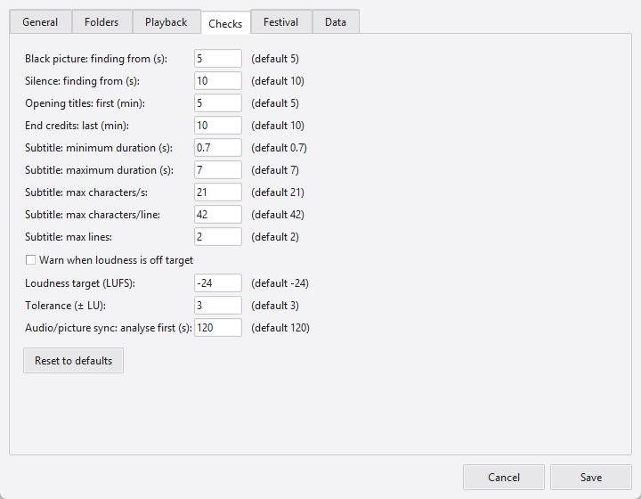

Checking, playback and management of DCPs for festivals and cinemas
ReelCheck is a Windows program that checks DCPs (Digital Cinema Packages, the format in which films are delivered to cinemas) before they are screened. It shows at a glance whether a film is complete, correct and ready to be ingested into the cinema server, and it helps with all the work of a festival: receiving drives, the screening schedule, reports for the selection committee, returns.
ReelCheck.exe from the program's Releases page on GitHub.Requirements: Windows 10 or 11, 64-bit. A modern processor helps for 4K playback; on slow computers there is the “Half resolution” option.
The program starts in Greek. For English: Settings → Settings… → General → Language → English, then restart ReelCheck (it offers to do it for you).
ReelCheck checks once a day whether a new version exists. If it does, it asks:
To check now: Tools → Check for updates / upgrade. Settings, notes and scans are kept.
ReelCheck.exe.
| Button | What it does |
|---|---|
| Open DCP folder… | loads a folder with one or more DCPs |
| Ingest DCP… | copies from the distributor's drive with all checks (chapter 7) |
| Open video… | plays an ordinary video file (MP4, MOV, MKV…) |
| Video → DCP… / Convert video… | conversions (chapter 9) |
| Hash check selected / all | compares every file with the PKL (chapter 5) |
| Scan film | checks picture, sound and subtitles over the whole duration |
| HTML report / Export CSV | printable report and a table for Excel |
| Log | the log file, useful when something goes wrong |
| Half resolution / Full screen | how playback will open |
| Status | Meaning | What to do |
|---|---|---|
| OK | All files are present and no problem was found. | Nothing. The film is ready. |
| WARNING | Something needs a look: e.g. the name does not match the content, a long silence, it does not meet the festival specifications, the KDM expires. | Read the findings below the list; clicking a time opens playback at that point. |
| ERROR | Serious problem: files are missing, bad hash (damaged file), the picture or sound cannot be opened. | Ask the distributor for a new copy, or copy again. |
| Finding | What it means |
|---|---|
| Files: missing N | The CPL refers to files that are not in the folder. If it is a VF, its OV may be missing. |
| Files: OK (+OV) | A Version File that takes picture/sound from the OV in the folder next to it. This is correct. |
| Hash: BAD HASH | The file differs from what its creator declared: damaged or incomplete. |
| name: sound 5.1, but it has 2 channels | The DCNC name does not match the content. The film plays, but tell the distributor / the projectionist. |
| black picture 00:41:10–00:41:30 | Continuous black picture in the middle of the film. Check whether it is intended. |
| silence …, channels without signal | Possible problem in the mix or the mastering. |
| clipping | The sound exceeds full scale at some points; distortion may be audible. |
| encrypted: no KDM found | A KDM for the cinema server is needed. Tools → Load KDM. |
Every DCP has a PKL (packing list) with the size and the SHA-1 “fingerprint” of every file. The hash check reads every file again and compares. This catches files damaged during copying or downloading. It takes as long as reading the whole DCP (e.g. 2–5 minutes for a 150 GB film from a fast drive). The result is remembered: if the file does not change, the next check is instant.
Checks the whole duration without playing: black picture, silence, channels without signal, LFE, clipping, LUFS loudness (integrated, LRA, true peak), whether the sound lasts as long as the picture, and the subtitles (outside the duration, too short, overlaps, reading speed). A 2-hour film takes about 3 minutes. The first and last minutes are treated as titles, so black there is not reported as a problem.
Tools → Audio/picture sync of selected. Finds “flashes” in the picture and short “beeps” in the sound (as in a sync test, 2-pop or clapper) in the first 2 minutes and measures how many ms apart they are. A positive number means the sound comes later. Up to ±22 ms (half a frame) is not noticeable, up to ±45 ms gives WARNING, above that ERROR. If the film has no such signal at the start, the program says so.
The name of a DCP follows the DCNC convention, e.g. Taxidi_FTR-1_F_EL-EN_51_2K_20261115_SMPTE_OV:
title, kind (FTR feature, SHR short, TLR trailer), aspect (F flat, S scope), audio-subtitle language, sound
(51 = 5.1), resolution, date, standard, OV/VF. ReelCheck reads it and compares it with the content. With the
festival specifications it gives WARNING for anything you do not accept (e.g. 2K only, SMPTE only, English
subtitles required).
For encrypted DCPs: KDM files (.xml) are found automatically in the folder or loaded with Tools → Load KDM. ReelCheck shows which server they are for and from when until when they are valid, and warns when they have expired or are not yet valid.
Double-click a film or click Play. A window opens with the film, a time bar, subtitles and audio meters per channel. Clicking a time in the findings or notes opens playback shortly before that point.

| Key | Function | Key | Function |
|---|---|---|---|
| Space | pause / resume | F | full screen |
| ← → | −10 / +10 s (with Shift ±60) | H | half / full resolution |
| , . | frame by frame | S | subtitles on/off |
| PgUp PgDn | previous / next reel | L | other subtitle language |
| Home | start | U | other sound (another CPL of the same duration) |
| 0 | all channels | 1–9 | solo a channel (L, R, C, LFE, Ls, Rs…) |
| M | mute | A | meters: automatic / always / hidden |
| N | new note at the current time | J / Shift+J | next / previous note |
| [ ] | A–B loop (\ cancel) | Z | 2× zoom at the mouse position |
| P | screenshot (Pictures\ReelCheck) | E | 3D: left / right eye |
| Ctrl+Z | delete last note | Esc / Q | exit |
Select e.g. trailer, ident and film with Ctrl+click and Tools → Playlist with the selected: they play one after the other (trailers and spots first, then the film).
Button Ingest DCP…: connect the drive that arrived and everything happens in one go:

Many DCPs arrive on drives made for cinema servers, which Windows cannot read.
The drive is opened read-only: ReelCheck never writes to it.
Tools → Copy selected to a drive with verification…: to prepare a drive for the cinema or a backup.
ReelCheck_copy_….txt with the result for every file is written at the destination.Button Video → DCP…. Accepts MP4, MOV, MKV and more. It uses the free program DCP-o-matic; if it is not installed, ReelCheck helps you download it and installs it.

.srt subtitles with the same name (e.g. film.srt or film.en.srt) are added
automatically. Greek titles are written in Latin characters in the DCP name. It takes about as long as the video or
longer, and needs free space of about 2× the final DCP.
Button Convert video…: to MP4 H.264 (plays everywhere), MP4 H.265 (smaller) or MOV ProRes (for editing). Options for quality, resolution, sound (stereo or as it is) and subtitles (copy or burned into the picture). If the video is already H.264/H.265, only the container changes: it takes seconds and loses no quality. The graphics card is used when available.
Select DCPs in the list and Tools → Export selected DCPs to MP4 (screener): e.g. for the committee or the website, with the DCP subtitles burned into the picture. Not possible for encrypted DCPs.
Festival → Festival ident / intro → DCP…: give a logo (PNG with transparency or JPG), optionally music and text, duration and aspect, and you get a ready DCP (kind XSN) to play before every film. The logo fades in and out on a black background; the music is cut to the duration with a fade at the end.

All of these are in the Festival menu.
Add screenings (date, time, screen, film from the list, extra time for an introduction or Q&A). The end time is calculated automatically and time clashes in the same screen are shown in red. The status of the DCP is shown for every screening.

For the selected films (or all): a cover page with a table and one page per film with three frames, details, findings, notes and space for the committee's comments. It needs Microsoft Edge (present on every Windows).
When the distributor sends a new version: select the old and the new one with Ctrl+click and Tools → Compare two selected DCPs. The table shows what is the same (✔) and what differs (≠, in red): duration, reels, picture, sound, subtitles. Files are compared by their PKL fingerprint without being read again, so the comparison is instant.

In Settings → Folders you set a folder (e.g. where DCPs are downloaded). When a new DCP arrives and the download or copy has finished, it is added to the list by itself, checked (hash + scan), and a Windows notification shows the result.
Festival → Festival catalogue (CSV)…: give the list of titles you expect (CSV with a “Title” column, or plain text with one title per line) and see which films arrived, which are missing and which have problems. Greek titles are also matched against Latin spelling (Το Ταξίδι = Taxidi).
Which drives and DCPs must be returned, to whom and by when. Overdue items are shown in red and those due within 3 days in orange. Festival → Add selected to returns adds the films selected in the list directly. Click “✔ Returned” when the drive has gone.

A summary of the list: number of films, total duration, disk space, kind, 2K/4K, sound, standard, subtitles, encrypted, how many were checked and their status. Exported to CSV.
When a long task finishes (copy, scan, conversion), a Windows notification appears at the bottom right, so you do not have to watch the screen. It is set in Settings → General.
Menu Settings → Settings…. Changes apply immediately, except the language, which needs a restart.

| Tab | Contents |
|---|---|
| General | language (Greek / English), theme (light / dark / automatic), update check, open the last folder, Windows notifications |
| Folders | festival folder, conversion outputs, screenshots, watching a folder for new DCPs |
| Playback | full screen / half resolution, audio device (e.g. the cinema speakers), initial volume, subtitles, meters |
| Checks | thresholds for black and silence, opening / end titles, subtitle limits, LUFS loudness target, sync analysis duration |
| Festival | the specifications you accept (resolution, fps, standard, sound, subtitle language, duration, encryption, 3D) |
| Data | data folder, cache cleanup, export / import settings to move them to another computer |
| What | Where |
|---|---|
| Settings | %APPDATA%\ReelCheck\settings.json |
| Notes | %APPDATA%\ReelCheck\notes\ |
| Scans, hash cache | %APPDATA%\ReelCheck\scans\, hash_cache.json |
| Screening schedule, returns | %APPDATA%\ReelCheck\schedule.json, returns.json |
| Log | %APPDATA%\ReelCheck\reelcheck.log (Log button) |
| Screenshots | Pictures\ReelCheck |
| Copy report | in the destination folder |
Nothing is written in DCP folders. The program connects to the Internet only to check for a new version (GitHub) and sends nothing about the user or the films. To move to another computer: Settings → Data → export settings.
4K DCPs are heavy. Choose “Half resolution” (or press H during playback). For checking sync, prefer the automatic check (chapter 5).
Check the audio device in Settings → Playback. If the selected device is not connected, sound plays from the Windows default device. M = mute, 0 = all channels.
Encrypted DCPs play only on a cinema server with a KDM. In ReelCheck you can check the hash, the KDM and the details, but not see the picture.
A Version File (e.g. subtitles only) needs its OV. Put the two folders side by side in the same parent folder and load again.
It is probably a Linux (ext) drive. Tools → Linux drive (chapter 7). Do not format it.
DCP-o-matic is needed; the “Video → DCP” window shows whether it was found and helps with the installation. Also check the free space in the output folder.
Microsoft Edge or Chrome is needed. Alternatively: HTML report, then Print → Save as PDF in the browser.
Click Log in the main window: every error is recorded there in detail. Send it with a description to whoever supports the program.